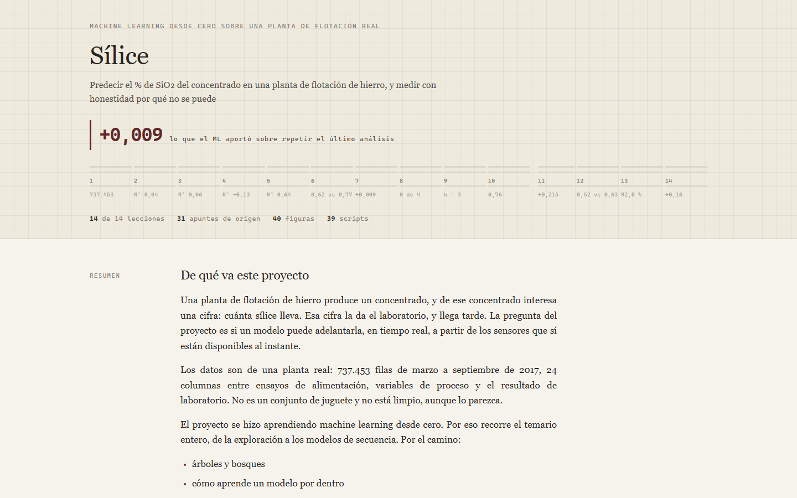

Terminado. 14 módulos, 56 figuras, cada cifra recalculada.
Sílice en una planta de flotación de hierro
¿Puede un modelo cantar la ley del concentrado antes que el laboratorio? Catorce módulos para averiguar que no, y por qué.

- El problema
- Una planta de flotación se entera de la ley de su concentrado horas tarde, por el laboratorio. Si un modelo la cantara en tiempo real, el operador podría corregir cuando corregir todavía sirve.
- Cómo lo resolví
- Árboles, bosques, gradient boosting, una red neuronal y variables con memoria. Y después, lo decisivo: un baseline de persistencia contra el cual compararlos.
- El resultado
- Un no, medido. El machine learning aporta nueve milésimas de R² sobre repetir el último análisis, así que el entregable es una recomendación de no desplegar y la lista de qué tendría que cambiar.
Medido
el modelo aporta +0,009 de R² sobre no hacer nada
La persistencia, o sea "supón que se queda donde está", da R² 0,632 a una hora. El modelo entrenado da 0,641. Pasadas cinco horas los dos se van a negativo. A doce horas el modelo es directamente peor que el baseline.
A mitad de camino esto parecía un éxito. Añadir memoria horaria y gradient boosting subió el R² de 0,04 a 0,64, que es el salto que uno pone en una diapositiva.
Después medí lo que el proceso te regala. La sílice no se mueve mucho en una hora, así que predecir simplemente que el siguiente valor es igual al último ya da 0,632. Casi todo el salto era la inercia de la planta, no la habilidad del modelo. Esa corrección se quedó escrita en los apuntes, porque pillarla vale más que el número que tumbó.
Lo que sí me llevaría a una reunión de operaciones no salió de predecir, salió de agrupar. K-medias encontró tres estados de operación, y uno de ellos manda en marzo y abril y luego desaparece. La planta cambió su forma de operar, y eso explica una deriva que llevaba degradando todos los modelos desde el módulo dos. El error mensual sube: 0,44 en junio, 0,65 en agosto, 0,76 en septiembre. Los datos no te dicen la ley de mañana, pero sí te dicen que la planta ya no es la que era.
Hecho con
- Python
- pandas
- scikit-learn
- gradient boosting
- SHAP
- LaTeX